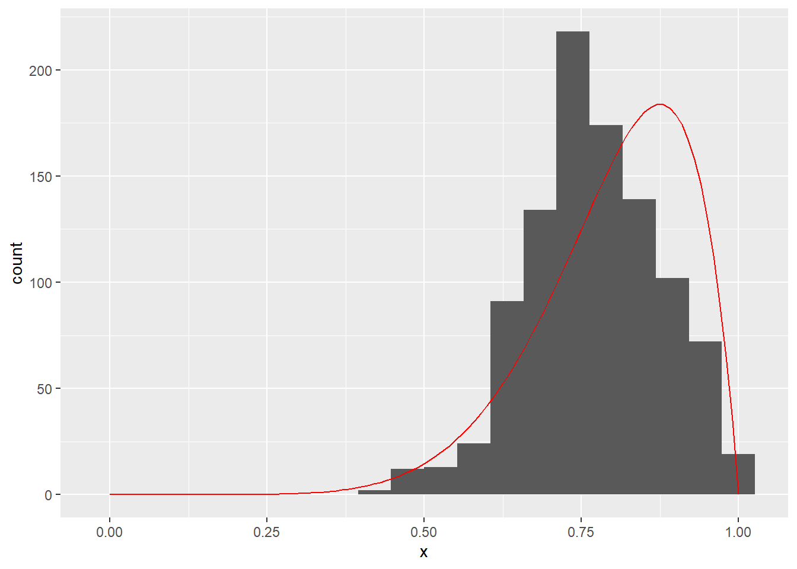

Chapter 3 Monte Carlo
Exercise 3.1 (Properties of a distribution from samples) Let \(X \sim Gamma(\alpha = 4, \beta = 2)\). Note that we are using the shape/rate parametrization. That is, the PDF is
\[p(x) = \frac{\beta^\alpha}{\Gamma(\alpha)} x^{\alpha - 1}e^{-\beta x}.\]
We are interested a few properties of \(X\):
- \(E[X]\),
- \(Var[X]\),
- \(P(1 < X \leq 2)\),
- a plot of the CDF of \(X\).
- Compute the above using the known theoretical properties of the Gamma distribution. For the CDF-related tasks you only need built-in functions for the Gamma and incomplete Gamma. For the latter you can use a package or go from the definition and use numerical integration. Compare with built-in pgamma or its equivalent in your programming language of choice.
- Compute the above using 100 independent samples from \(Gamma(4, 2)\). You can draw these samples using rgamma() or its equivalent in your programming language of choice.
- Compare results from (a) and (b). Why do we get better approximations for some tasks and worse for others?
Solution. The solution is as follows:
- The mean of the Gamma distribution in this parametrization is \(E[X] = \frac{\alpha}{\beta} = 2\) and its variance is \(Var[X] = \frac{\alpha}{\beta^2} = 1\). The CDF is
\[F(x) = \frac{1}{\Gamma(\alpha)}\gamma(\alpha, \beta x),\]
where \(\gamma(,)\) is the lower incomplete Gamma function.
# the lower incomplete gamma function (vectorized in the second argument only)
ligf <- function(a, b) {
fn <- function(x, s) {
x^(a - 1) * exp(-x)
}
res <- c()
for (i in 1:length(b)) {
res <- c(res, integrate(fn, lower = 0, upper = b[i], s = a)$value)
}
res
}
# CDF of gamma
pg <- function(x, alpha, beta) {
(1.0 / gamma(alpha)) * ligf(alpha, beta * x)
}We can use the above to solve tasks 3 and 4 and compare the results with R's built-in functions:
# P(1 <= X <= 2)
pg(2, 4, 2) - pg(1, 4, 2)## [1] 0.4236533pgamma(2, 4, 2) - pgamma(1, 4, 2)## [1] 0.4236533x <- seq(0, 10, 0.01)
plot(x, pg(x, 4, 2), type = "p")
points(x, pgamma(x, 4, 2), type = "p", cex = 0.2, col = "red")- We can estimate the mean and variance with the sample mean and sample average. We can estimate the integral from \(a\) to \(b\) with the proportion of samples that fall into that range. Similarly, we can estimate the CDF at any \(x\) by counting the proportion of samples that are less or equal to \(x\). Recall that the latter is just the definition of the ECDF, which we know will converge uniformly to the CDF as the sample size grows.
set.seed(0)
y <- rgamma(100, 4, 2)
mean(y)## [1] 1.949221var(y)## [1] 0.6468588mean(1 < y & y <= 2)## [1] 0.46z <- x
for (i in 1:length(x)) {
z[i] <- mean(y <= x[i])
}
plot(x, z, type = "l")
points(x, pgamma(x, 4, 2), type = "l", cex = 0.2, col = "red")
- Is left to the reader.
```
Exercise 3.2 (Integrating a single variable function) We are going to integrate the PDF of the Beta(3, 1) (dbeta(x, 3, 1) in R) distribution on \((0,1)\). Because it is a PDF, we know that the integral should be 1.
- Integrate using the trapezoidal rule and plot the absolute error for different \(n\), where \(n\) is the number of segments in our partition of \((0, 1)\). Use regular partitions.
- Integrate using Monte Carlo integration using independent samples from the uniform distribution on \((0, 1)\). That is, evaluating dbeta(n, 3, 1) on \(n\) uniformly drawn points. Plot the absolute error for different \(n\).
- What can you say about the relationship between the approximation error and \(n\) for (a) and (b)?
- Can you find a function on \((0,1)\) where the trapezoidal rule would perform much worse than Monte Carlo integration.
Solution. a. First, we implement the trapezoidal rule integrator:
trapezoitegrator <- function(fn, lb, ub, n) {
delta <- (ub - lb) / n
total <- 0
for (i in 1:n) {
total <- total + delta * ((fn(i * delta) + fn((i - 1) * delta) ) / 2.0)
}
total
}Then we use it on our function for different \(n\):
fn <- function(x) {dbeta(x, 3 ,1)}
error <- rep(-Inf, 20)
for (n in 1:20) {
error[n] <- abs(trapezoitegrator(fn, 0, 1, n) - 1)
}
plot(1:20, error, type = "b", xlab = "n")- Monte Carlo integration requires less work. We only need to sample \(n\) samples from the uniform, evaluate our function at those points, and compute the mean. In general we would also have to multiply with the lenght of the interval we are integrating over (area = average height times lenght), but that is 1 in this case.
set.seed(0)
n <- seq(1, 1000, 5)
error <- rep(-Inf, length(n))
for (i in 1:length(n)) {
z <- runif(n[i])
error[i] <- abs(mean(dbeta(z, 3, 1)) - 1)
}
plot(n, error, type = "b", xlab = "n")
- Is left to the reader.
- Is left to the reader.
```
Exercise 3.3 (Simulating a 6-sided die) Write a random number generator for a fair 6-sided die using the inverse transform method. Draw 10000 samples and compute the relative frequencies of outcomes.
Don't use the built-in RNG to generate uniform random numbers between 0 and 1. Instead, use the Linear Congruential Generator
\[ x_{n+1} = (1664525 x_{n} + 1013904223) \mod 2^{32}.\] Note: Scale by dividing with maximum possible number to get numbers between 0 and 1.Solution. First, let's implement our uniform random number generator:
rng <- function(n, seed = 0) {
x <- seed
for (i in 1:n) {
x <- c(x, (1664525 * x[length(x)] + 1013904223) %% 2^32)
}
x / (2^32 - 1)
}Now we can use it to generate samples from an fair 6-sided die:
inverse_cdf <- function(x) {
if (x < 1/6) return (1)
if (x < 2/6) return (2)
if (x < 3/6) return (3)
if (x < 4/6) return (4)
if (x < 5/6) return (5)
return (6)
}
# generate 10000 samples
x <- sapply(rng(10000, 0), inverse_cdf)
table(x) / 10000## x
## 1 2 3 4 5 6
## 0.1689 0.1673 0.1634 0.1665 0.1651 0.1689```
Exercise 3.4 (Estimating pi) Take the \([-1,1] \times [-1,1]\) rectangle and inscribe a circle. The circle has radius 1, so the ratio between the area of the circle and the area of the rectangle is \(\frac{\pi}{4}\).
- Let's sample from the area of the rectangle, which is easy, and count how many points are less than 1 away from the center. The ratio of those points multiplied by 4 should give us an estimate of \(\pi\).
- Compute the approximation standard error of your estimate. How many samples, approximately, do we need, to get \(\pi\) correct up to including the second decimal place?
set.seed(0)
n <- 1000000
x1 <- runif(n, -1, 1)
x2 <- runif(n, -1, 1)
dist <- sqrt(x1^2 + x2^2)
in_circle <- dist < 1
mean(4 * in_circle) # estimate of PI## [1] 3.142368sd(4 * in_circle) / sqrt(n) # approximation standard error## [1] 0.001641645It takes around 1 million samples to get it right on the 2nd decimal.
```
Exercise 3.5 (Hello Rejection Sampling Kitty) We want to paint a huge image of Hello Kitty on the side of a building (the proportions of the image below correspond to the building). We already painted the side all white, using approximately 100 litres of white paint. Approximately how many litres of black paint do we have to order so that we can paint the Hello Kitty silhouette?

Exercise 3.6 (More Monte Carlo Integration) Let \(X \sim N(0, 1)\) and \(f(x) = 10\exp(-5(x - 3)^4)\). We are interested in computing the expectation of \(f\) with respect to \(X\).
- Approximate the integral using a quadrature based method (you may use a third-party library).
- Approximate the integral using Monte Carlo (100 samples).
- Repeat (b) 1000 times, for each repetition compute a 90% CI using the normal approximation, and observe whether or not the CI contains the 'true' value (use result from (a) as true value). Does it contain the true value 90% of the time? Discuss. Note: This task requires you to repeat the process of estimating the integral with 100 points 1000 times. Each of the 1000 repetitions will give you a different estimate and confidence interval, of course, because the samples are drawn at random.
- Approximate the integral using importance sampling (100 samples) with a sensible choice of surrogate distribution. Compare the variance of your importance sampling estimator with the variance of the Monte Carlo estimator from (b) and discuss.
- Approximate the integral using Monte Carlo (100 samples) but instead of using the build-in generator for the standard normal distribution, implement rejection sampling using a logistic distribution-based envelope. Compare the variance of this estimator with the variance of estimator from (b) and discuss.
- Approximate the integral using Monte Carlo (100 samples) but instead of using the build-in generator for the standard normal distribution, implement Metropolis-Hastings with a \(U(x_i - \delta, x_i + \delta), \delta > 0\) proposal distribution. How do the variance of the estimator and the rejection rate change with \(\delta\)? Find the optimal \(\delta\) and compare the optimal variance with (b). What is the effective sample size (ESS)? You may use a library for MCMC variance estimation.